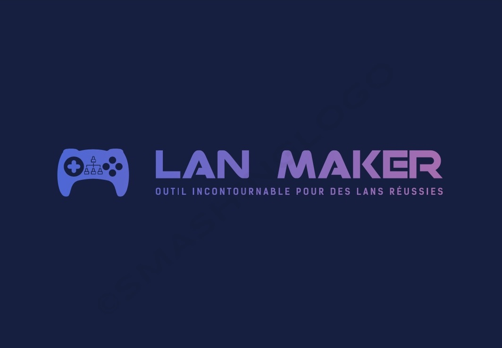

Projet 7 : Lan Maker
Développement d’une application de gestion de tournois esports : modélisation, développement Java, interface JavaFX et gestion projet complet.


À propos du projet
En équipe, nous avons développé l’application Lan Maker destinée à faciliter l’organisation de tournois esports. Le projet a couvert l’ensemble du cycle de développement logiciel : gestion de projet, modélisation UML, conception fonctionnelle, développement en Java et création d’une interface utilisateur en JavaFX.
De la gestion des contraintes algorithmiques aux diagrammes de classes et séquences, chaque membre de l’équipe a contribué à la conception robuste et au développement fonctionnel de l’application.
Compétences développées :
- Gestion de projet collaboratif
- Modélisation UML : cas d’utilisation, classes et séquences
- Programmation orientée objet avancée (Java)
- Création d’interface avec JavaFX
- Implémentation d’algorithmes métier